1. Basic water balance simulation
Miquel De Caceres
2019-05-31
1_BasicWaterBalance.RmdAbout this vignette
The present document describes how to run the soil plant water balance model described in De Cáceres et al. (2015) using package medfate. The document indicates how to prepare the inputs, use the simulation functions and inspect the outputs. All the details of the model design and formulation are given in a separate vignette that can be found on the website of the R package (http://vegmod.ctfc.cat/medfateweb). Because it introduces many basic features of package medfate, this document should be read before addressing advanced topics of water balance simulations or growth simulations.
Preparing model inputs
Any forest water balance model needs information on climate, vegetation and soils of the forest stand to be simulated. Moreover, since the soil water balance in medfate differentiates between species, species-specific parameters are also needed. In this subsection we explain the different steps (including optional pathways) to prepare all the data needed to run function spwb().
Soils
Required soil data
Simulation models in medfate require information on the physical attributes of soil, namely soil depth, texture, bulk density and rock fragment content. Soil information needs to be entered as a data frame with soil layers in rows and physical attributes in columns. The model accepts one to five soil layers with arbitrary widths. Soil physical attributes can be initialized to default values, for a given number of layers, using function defaultSoilParams():
print(spar)## widths clay sand om bd rfc
## 1 300 25 25 NA 1.5 20
## 2 700 25 25 NA 1.5 40where widths are soil layer widths in mm; clay and sand are the percentage of clay and sand, in percent of dry weight, om stands for organic matter, bd is bulk density (in g·cm\(^{-3}\)) and rfc the percentage of rock fragments. Because soil properties vary strongly at fine spatial scales, ideally soil physical attributes should be measured on samples taken at the forest stand to be simulated. For those users lacking such data, soil properties modelled at larger scales are available via soilgrids.org (see function soilgridsParams()).
Soil input object
The soil input for function spwb() is actually a list of class soil that is created using a function with the same name:
examplesoil = soil(spar)
class(examplesoil)## [1] "soil" "list"The list contains the following elements:
names(examplesoil)## [1] "SoilDepth" "W" "SWE" "Temp"
## [5] "Ksoil" "Gsoil" "dVec" "sand"
## [9] "clay" "om" "usda_Type" "VG_alpha"
## [13] "VG_n" "VG_theta_res" "VG_theta_sat" "macro"
## [17] "rfc"In addition to the physical soil description, this object contains soil parameters needed for soil water balance simulations. For example, macro specifies the macroporosity of each layer; Gsoil and Ksoil are parameters needed to model the process of water infiltration into the soil. The meaning of all elements in the soil object can be found in the help page for function soil().
Importantly, the soil object is used to store the degree of moisture of each soil layer. In particular, element W contains the state variable that represents moisture content - the proportion of moisture relative to field capacity - which is normally initialized to 1 for each layer:
examplesoil$W## [1] 1 1It is important to remember that, unlike normal objects in R, any water balance simulation will modify the moisture values in the input soil object. That is, the state of the soil at the end of the simulated process (i.e. W) will be stored. Hence, one can use the same object to simulate water balance sequentially and the final state of one simulation is the initial state of the next.
Water retention curves
At any time, one can show the characteristics and status of the soil object using its print function:
## Soil depth (mm): 1000
##
## Layer 1 [ 0 to 300 mm ]
## clay (%): 25 silt (%): 50 sand (%): 25 organic matter (%): NA [ Silt loam ]
## Rock fragment content (%): 20 Macroporosity (%): 5
## Theta WP (%): 14 Theta FC (%): 30 Theta SAT (%): 49 Theta current (%) 30
## Vol. WP (mm): 34 Vol. FC (mm): 73 Vol. SAT (mm): 118 Vol. current (mm): 73
## Temperature (Celsius): NA
##
## Layer 2 [ 300 to 1000 mm ]
## clay (%): 25 silt (%): 50 sand (%): 25 organic matter (%): NA [ Silt loam ]
## Rock fragment content (%): 40 Macroporosity (%): 5
## Theta WP (%): 14 Theta FC (%): 30 Theta SAT (%): 49 Theta current (%) 30
## Vol. WP (mm): 60 Vol. FC (mm): 127 Vol. SAT (mm): 207 Vol. current (mm): 127
## Temperature (Celsius): NA
##
## Total soil saturated capacity (mm): 325
## Total soil water holding capacity (mm): 200
## Total soil extractable water (mm): 126
## Total soil current Volume (mm): 200
## Water table depth (mm): 1000
##
## Snow pack water equivalent (mm): 0The modelled moisture content of the soil depends on the water retention curve used to represent the relationship between soil volumetric water content (\(\theta\); %) and soil water potential (\(\Psi\); MPa). By default the Saxton (model = "SX") equations are used to model the water retention curve, but the user may choose to follow Van Genuchten - Mualem equations, which will give slightly different values for the same texture:
## Soil depth (mm): 1000
##
## Layer 1 [ 0 to 300 mm ]
## clay (%): 25 silt (%): 50 sand (%): 25 organic matter (%): NA [ Silt loam ]
## Rock fragment content (%): 20 Macroporosity (%): 5
## Theta WP (%): 13 Theta FC (%): 29 Theta SAT (%): 42 Theta current (%) 29
## Vol. WP (mm): 32 Vol. FC (mm): 68 Vol. SAT (mm): 102 Vol. current (mm): 68
## Temperature (Celsius): NA
##
## Layer 2 [ 300 to 1000 mm ]
## clay (%): 25 silt (%): 50 sand (%): 25 organic matter (%): NA [ Silt loam ]
## Rock fragment content (%): 40 Macroporosity (%): 5
## Theta WP (%): 13 Theta FC (%): 30 Theta SAT (%): 42 Theta current (%) 30
## Vol. WP (mm): 54 Vol. FC (mm): 127 Vol. SAT (mm): 178 Vol. current (mm): 127
## Temperature (Celsius): NA
##
## Total soil saturated capacity (mm): 280
## Total soil water holding capacity (mm): 196
## Total soil extractable water (mm): 128
## Total soil current Volume (mm): 196
## Water table depth (mm): 1000
##
## Snow pack water equivalent (mm): 0While Saxton equations use texture and organic matter as inputs, the Van Genuchten-Mualem equations need other parameters, which are estimated using pedotransfer functions and their names start with VG_ (two alternative options are provided in function soil to estimate Van Genuchten parameters). The following code calls function soil_retentionCurvePlot() to illustrate the difference between the two water retention models in this soil:
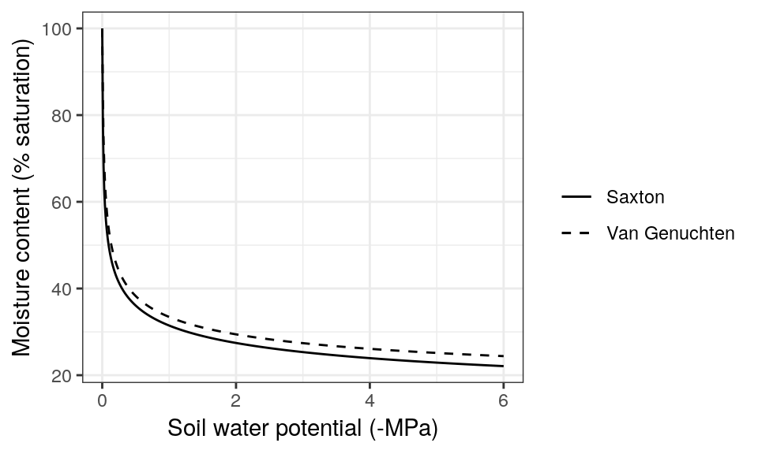
Low-level functions, such as soil_psi2thetaSX() and soil_psi2thetaVG() (and their counterparts soil_theta2psiSX() and soil_theta2psiVG()), can be used to calculate volumetric soil moisture from the water potential (and viceversa) using the two models. When simulating soil water balance, the user can choose among the two models (see control parameters below).
Species-specific parameters
Simulation models in medfate require a data frame with species parameter values. The package provides a default data set of parameter values for 89 Mediterranean species (rows), resulting from bibliographic search, fit to empirical data or expert-based guesses:
data("SpParamsMED")These species commonly occur in the Spanish forest inventory of Catalonia, but may not be sufficient for other areas. A large number of parameters (columns) can be found in SpParamsMED:
names(SpParamsMED)## [1] "Name" "IFNcodes" "SpIndex"
## [4] "Group" "Order" "Family"
## [7] "GrowthForm" "TreeType" "Hmed"
## [10] "Hmax" "Z50" "Z95"
## [13] "Zmax" "a_ash" "a_bsh"
## [16] "b_bsh" "cr" "a_fbt"
## [19] "b_fbt" "c_fbt" "d_fbt"
## [22] "a_cr" "b_1cr" "b_2cr"
## [25] "b_3cr" "c_1cr" "c_2cr"
## [28] "a_cw" "b_cw" "fHDmin"
## [31] "fHDmax" "SLA" "LeafDensity"
## [34] "r635" "pDead" "maxFMC"
## [37] "minFMC" "LeafPI0" "LeafEPS"
## [40] "LeafAF" "StemPI0" "StemEPS"
## [43] "StemAF" "LeafDuration" "LigninPercent"
## [46] "ParticleDensity" "LeafLitterFuelType" "Flammability"
## [49] "SAV" "HeatContent" "albedo"
## [52] "k" "g" "Sgdd"
## [55] "Psi_Extract" "WUE" "pRootDisc"
## [58] "Gwmin" "Gwmax" "VCleaf_kmax"
## [61] "VCleaf_c" "VCleaf_d" "Kmax_stemxylem"
## [64] "VCstem_c" "VCstem_d" "Kmax_rootxylem"
## [67] "VCroot_c" "VCroot_d" "LeafWidth"
## [70] "Narea" "Vmax298" "Jmax298"
## [73] "Al2As" "WoodDensity" "WoodC"
## [76] "RGRmax" "Cstoragepmax"Not all parameters are needed for all models. The user can find parameter definitions in the help page of this data set. However, to fully understand the role of parameters in the model, the user should read the details of model design and formulation (http://vegmod.ctfc.cat/medfateweb).
Vegetation
Forest plot data
Models included in medfate were primarily designed to be ran on forest inventory plots. In this kind of data, the vegetation of a sampled area is described in terms of woody plants (trees and shrubs) along with their size and species identity. Forest plots in medfate are assumed to be in a format that follows closely the Spanish forest inventory. Each forest plot is represented in an object of class forest, a list that contains several elements. Among them, the most important items are two data frames, treeData (for trees) and shrubData for shrubs:
data(exampleforest)
exampleforest## $ID
## [1] "1"
##
## $patchsize
## [1] 10000
##
## $treeData
## Species N DBH Height Z50 Z95
## 1 54 168 37.55 800 750 3000
## 2 68 384 14.60 660 750 3000
##
## $shrubData
## Species Cover Height Z50 Z95
## 1 65 3.75 30 50 1000
##
## $herbCover
## [1] 10
##
## $herbHeight
## [1] 20
##
## $seedBank
## Species Abundance
## 5 54 100
## 8 65 100
## 9 68 100
##
## attr(,"class")
## [1] "forest" "list"Trees are expected to be primarily described in terms of species, diameter (DBH) and height, whereas shrubs are described in terms of species, percent cover and mean height.
Aboveground and belowground data
Because the forest plot format is rather specific, simulation functions in medfate allow starting in a more general way using two data frames, one with aboveground information (i.e. the leave area and size of plants) and the other with belowground information (i.e. root distribution). The aboveground data frame does not distinguish between trees and shrubs. It includes, for each plant cohort to be considered in rows, its species identity, height and leaf area index (LAI). While users can build their input data themselves, we use function forest2aboveground() on the object exampleforest to show how should the data look like:
above = forest2aboveground(exampleforest, SpParamsMED)
above## SP N DBH Cover H CR LAI_live LAI_expanded
## T1_54 54 168.000 37.55 NA 800 0.7150421 0.81670117 0.81670117
## T2_68 68 384.000 14.60 NA 660 0.6055642 0.79779523 0.79779523
## S1_65 65 5503.456 NA 3.75 30 0.9738889 0.08913325 0.08913325
## LAI_dead
## T1_54 0
## T2_68 0
## S1_65 0Note that the call to forest2aboveground() included species parameters, because species-specific values are needed to calculate leaf area from tree diameters or shrub cover. Columns N, DBH and Cover are required for simulating growth, but not for soil water balance, which only requires columns SP, H (in cm), CR (i.e. the crown ratio), LAI_live, LAI_expanded and LAI_dead. Here plant cohorts are given unique codes that tell us whether they correspond to trees or shrubs, but the user can use other row identifiers as long as they are unique. In practice, the user only needs to worry to calculate the values for LAI_live. LAI_live and LAI_expanded can contain the same LAI values, and LAI_dead is normally zero. This is so because models update LAI_expanded and LAI_dead according to the leaf phenology of species.
Aboveground leaf area distribution (with or without distinguishing among cohorts) can be examined by calling function vprofile_leafAreaDensity():
vprofile_leafAreaDensity(above, byCohorts = F)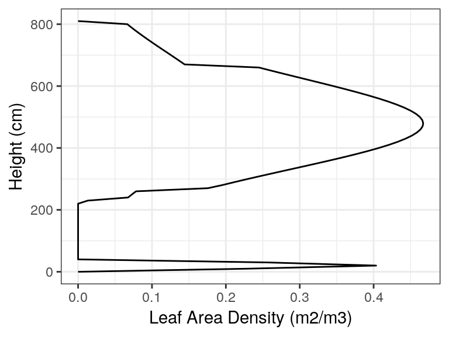
vprofile_leafAreaDensity(above, byCohorts = T)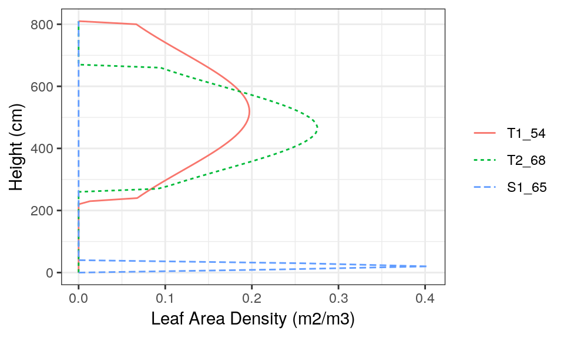
Regarding belowground information, a matrix describing for each plant cohort, the proportion of fine roots in each soil layer. As before, we use function forest2belowground() on the object exampleforest to show how should the data look like:
below = forest2belowground(exampleforest, examplesoil, SpParamsMED)
below## 1 2
## T1_54 0.1933638 0.8066362
## T2_68 0.1933638 0.8066362
## S1_65 0.8981075 0.1018925Function forest2belowground() internally takes values of Z50 and Z95 and calls function root_ldrDistribution() to estimate the distribution of fine roots according to the linear dose response model. For example the first row is:
exampleforest$treeData$Z95[1],
examplesoil$dVec)## [,1] [,2]
## [1,] 0.1933638 0.8066362An analogous function root_conicDistribution() can be used to estimate fine root distribution according to a cone. The user is free to build any numeric matrix for root distribution, as long as values in rows sum always one (i.e. we have proportions). Otherwise, functions root_conicDistribution() and root_ldrDistribution() can be used to calculate root distribution under specific assumptions.
Users can visually inspect the distribution of fine roots of forest objects by calling function vprofile_rootDistribution():
vprofile_rootDistribution(exampleforest, SpParamsMED)
Meteorological forcing
Soil water simulations require daily weather inputs. The weather variables that are required depend on the complexity of the soil water balance model we are using. In the simplest case, only mean temperature, precipitation and potential evapotranspiration is required, but the more complex simulation model also requires radiation, wind speed, min/max temparature and relative humitidy. Here we show an example of meteorological forcing data.
data(examplemeteo)
head(examplemeteo)## MeanTemperature MinTemperature MaxTemperature Precipitation
## 2001-01-01 3.57668969 -0.5934215 6.287950 4.869109
## 2001-01-02 1.83695972 -2.3662458 4.569737 2.498292
## 2001-01-03 0.09462563 -3.8541036 2.661951 0.000000
## 2001-01-04 1.13866156 -1.8744860 3.097705 5.796973
## 2001-01-05 4.70578690 0.3288287 7.551532 1.884401
## 2001-01-06 4.57036721 0.5461322 7.186784 13.359801
## MeanRelativeHumidity MinRelativeHumidity MaxRelativeHumidity
## 2001-01-01 78.73709 65.15411 100.00000
## 2001-01-02 69.70800 57.43761 94.71780
## 2001-01-03 70.69610 58.77432 94.66823
## 2001-01-04 76.89156 66.84256 95.80950
## 2001-01-05 76.67424 62.97656 100.00000
## 2001-01-06 89.01940 74.25754 100.00000
## Radiation WindSpeed WindDirection PET
## 2001-01-01 12.89251 2.000000 172 1.3212770
## 2001-01-02 13.03079 7.662544 278 2.2185985
## 2001-01-03 16.90722 2.000000 141 1.8045176
## 2001-01-04 11.07275 2.000000 172 0.9200627
## 2001-01-05 13.45205 7.581347 321 2.2914449
## 2001-01-06 12.84841 6.570501 141 1.7255058Simulation models in medfate have been designed to work along with data generated from package meteoland. The user is strongly recommended to resort to this package to obtain suitable weather input for soil water balance simulations.
Simulation control
Apart from data inputs, the behaviour of simulation models can be controlled using a set of global parameters. The default parameterization is obtained using function defaultControl():
control = defaultControl()
control## $verbose
## [1] TRUE
##
## $subdailyResults
## [1] FALSE
##
## $soilFunctions
## [1] "SX"
##
## $snowpack
## [1] TRUE
##
## $drainage
## [1] TRUE
##
## $leafPhenology
## [1] TRUE
##
## $transpirationMode
## [1] "Granier"
##
## $hydraulicCostFunction
## [1] 1
##
## $verticalLayerSize
## [1] 100
##
## $nStemSegments
## [1] 1
##
## $capacitance
## [1] FALSE
##
## $cavitationRefill
## [1] TRUE
##
## $klat
## [1] 0.1
##
## $taper
## [1] TRUE
##
## $numericParams
## $numericParams$maxNsteps
## [1] 400
##
## $numericParams$ntrial
## [1] 200
##
## $numericParams$psiTol
## [1] 1e-04
##
## $numericParams$ETol
## [1] 1e-07
##
##
## $fracRootResistance
## [1] 0.4
##
## $averageFracRhizosphereResistance
## [1] 0.15
##
## $Catm
## [1] 386
##
## $ndailysteps
## [1] 24
##
## $thermalCapacityLAI
## [1] 1e+06
##
## $defaultWindSpeed
## [1] 2.5
##
## $storagePool
## [1] "none"Most of these parameters should normally be left to their default value. However, there are three that deserve explanation here:
- Console output can be turned off by setting
verbose = FALSE. - The soil water retention curves can be switched between Saxton’s and Van Genuchten’s using parameter
soilFunctions. - The complexity of the soil water balance calculations will be very different if we set
transpirationMode = "Sperry". Most of the other options apply in the case of complex soil water balance only. - Non-reversible cavitation can be forced by setting
cavitationRefill = FALSE.
Water balance input object
A last step is needed before calling simulation functions. It consists in the compilation of all aboveground and belowground parameters and the specification of additional parameter values for each plant cohort, such as their light extinction coefficient or their response to drought. This is done by calling function spwbInput() and taking species parameter values from species parameter data:
x = spwbInput(above, below, examplesoil, SpParamsMED, control)Different parameter variables will be drawn depending on the value of transpirationMode. For the simple model, relatively few parameters are needed. All the input information for forest data and species parameter values can be inspected by printing the input object.
x## $control
## $control$verbose
## [1] TRUE
##
## $control$subdailyResults
## [1] FALSE
##
## $control$soilFunctions
## [1] "SX"
##
## $control$snowpack
## [1] TRUE
##
## $control$drainage
## [1] TRUE
##
## $control$leafPhenology
## [1] TRUE
##
## $control$transpirationMode
## [1] "Granier"
##
## $control$hydraulicCostFunction
## [1] 1
##
## $control$verticalLayerSize
## [1] 100
##
## $control$nStemSegments
## [1] 1
##
## $control$capacitance
## [1] FALSE
##
## $control$cavitationRefill
## [1] TRUE
##
## $control$klat
## [1] 0.1
##
## $control$taper
## [1] TRUE
##
## $control$numericParams
## $control$numericParams$maxNsteps
## [1] 400
##
## $control$numericParams$ntrial
## [1] 200
##
## $control$numericParams$psiTol
## [1] 1e-04
##
## $control$numericParams$ETol
## [1] 1e-07
##
##
## $control$fracRootResistance
## [1] 0.4
##
## $control$averageFracRhizosphereResistance
## [1] 0.15
##
## $control$Catm
## [1] 386
##
## $control$ndailysteps
## [1] 24
##
## $control$thermalCapacityLAI
## [1] 1e+06
##
## $control$defaultWindSpeed
## [1] 2.5
##
## $control$storagePool
## [1] "none"
##
##
## $canopy
## $canopy$gdd
## [1] 0
##
##
## $cohorts
## SP Name
## T1_54 54 Pinus halepensis
## T2_68 68 Quercus ilex
## S1_65 65 Quercus coccifera
##
## $above
## H CR LAI_live LAI_expanded LAI_dead
## T1_54 800 0.7150421 0.81670117 0.81670117 0
## T2_68 660 0.6055642 0.79779523 0.79779523 0
## S1_65 30 0.9738889 0.08913325 0.08913325 0
##
## $below
## $below$V
## 1 2
## T1_54 0.1933638 0.8066362
## T2_68 0.1933638 0.8066362
## S1_65 0.8981075 0.1018925
##
##
## $paramsBase
## albedo k g Sgdd
## T1_54 0.14 0.50 1.00 0
## T2_68 0.18 0.55 0.50 0
## S1_65 0.18 0.55 0.25 0
##
## $paramsTransp
## Psi_Extract WUE pRootDisc
## T1_54 -2 6 0
## T2_68 -3 6 0
## S1_65 -4 6 0
##
## $Transpiration
## T1_54 T2_68 S1_65
## 0 0 0
##
## $Photosynthesis
## T1_54 T2_68 S1_65
## 0 0 0
##
## $PLC
## [1] 0 0 0
##
## attr(,"class")
## [1] "spwbInput" "list"As with the soil input object, the spwbInput object may be modified during simulations. In the case of soil water balance, these modifications are minimal, for example concerning LAI_expanded, but in the case of growth simulations the object is used to store the status of vegetation during and at the end of simulations. If one has a forest object, the spwbInput object can be generated in directly from it, avoiding the need to explicitly build aboveground and belowground data frames:
x = forest2spwbInput(exampleforest, examplesoil, SpParamsMED, control)Finally, note that one can play with plant-specific parameters for soil water balance (instead of using species-level values) by modifying manually the parameter values in this object.
Executing the soil water balance model
Water balance for a single day
Soil water balance simulations will normally span periods of several months or years, but since the model operates at a daily temporal scale, it is possible to perform soil water balance for one day only. This is done using function spwb_day(). In the following code we select day 100 from the meteorological input data and perform soil water balance for that day only:
d = 100
examplemeteo$MinTemperature[d], examplemeteo$MaxTemperature[d],
examplemeteo$MinRelativeHumidity[d], examplemeteo$MaxRelativeHumidity[d],
examplemeteo$Radiation[d], examplemeteo$WindSpeed[d],
latitude = 41.82592, elevation = 100,
slope= 0, aspect = 0, prec = examplemeteo$Precipitation[d])Function spwb_day() is most useful when working with the complex transpiration model. This is why so many meteorological variables are required. The output of spwb_day() is a list with three elements:
names(sd1)## [1] "cohorts" "WaterBalance" "Soil" "Plants"- WaterBalance: Contains the soil water balance flows (precipitation, infiltration, transpiration, …)
- Soil: Contains output values by soil layer (i.e. water evaporated from each soil layer, water transpired from each soil layer and the final soil water potential).
- Plants: Contains output values by plant cohort (i.e. LAI values, transpiration, water potential, drought stress index, …).
sd1## $cohorts
## SP Name
## T1_54 54 Pinus halepensis
## T2_68 68 Quercus ilex
## S1_65 65 Quercus coccifera
##
## $WaterBalance
## PET Rain Snow NetRain
## 5.0233468 0.0000000 0.0000000 0.0000000
## Snowmelt Runon Infiltration Runoff
## 0.0000000 0.0000000 0.0000000 0.0000000
## DeepDrainage SoilEvaporation PlantExtraction Transpiration
## 0.0000000 0.5000000 1.0592823 1.0592823
## LAIcell LAIcelldead Cm Lground
## 1.7036297 0.0000000 1.2378821 0.4081334
##
## $Soil
## SoilEvaporation PlantExtraction psi
## 1 4.999998e-01 0.2341275 -0.03474038
## 2 1.529512e-07 0.8251548 -0.03410547
##
## $Plants
## LAI Transpiration Photosynthesis psi DDS
## T1_54 0.81670117 0.51014458 0.95382341 -0.03323346 3.180250e-06
## T2_68 0.79779523 0.50756145 0.94899369 -0.03323346 9.422974e-07
## S1_65 0.08913325 0.04157628 0.07773567 -0.03405774 4.278514e-07
##
## attr(,"class")
## [1] "spwb_day" "list"Water balance for multiple days
Most often, users will use function spwb() to run the soil water balance model. This function requires the spwbInput object, the soil object and the meteorological data frame. However, function spwb_day() modified the state variables of the input objects. In particular, the values of soil moisture and cumulative growth degree days are now:
examplesoil$W## [1] 0.9899178 0.9935244x$canopy$gdd## [1] 1.232373We simply reset state variables to their default values so that new simulations are not affected by the end state of the previous simulation:
spwb_resetInputs(x, examplesoil)
examplesoil$W## [1] 1 1x$canopy$gdd## [1] 0Now we are ready to call function spwb():
## Initial soil water content (mm): 200.239
## Performing daily simulations .....................................done.
## Final soil water content (mm): 180.113
## Change in soil water content (mm): -20.1257
## Water balance result (mm): -20.1257
## Water balance components:
## Precipitation (mm) 513
## Rain (mm) 462 Snow (mm) 51
## Interception (mm) 86 Net rainfall (mm) 376
## Infiltration (mm) 419 Runoff (mm) 8 Deep drainage (mm) 103
## Soil evaporation (mm) 39 Transpiration (mm) 297Function spwb() returns an object of class with the same name, actually a list:
class(S)## [1] "spwb" "list"If we inspect its elements, we realize that the output is arranged differently than in spwb_day():
names(S)## [1] "latitude" "topography" "spwbInput"
## [4] "soilInput" "WaterBalance" "Soil"
## [7] "PlantLAI" "PlantTranspiration" "PlantPhotosynthesis"
## [10] "PlantPsi" "PlantStress" "subdaily"In particular, element spwbInput contains a copy of the input parameters that were used to run the model:
names(S$spwbInput)## [1] "control" "canopy" "cohorts" "above"
## [5] "below" "paramsBase" "paramsTransp" "Transpiration"
## [9] "Photosynthesis" "PLC"As before, WaterBalance contains water balance components, but in this case in form of a data frame with days in rows:
head(S$WaterBalance)## GDD LAIcell LAIcelldead Cm Lground PET
## 2001-01-01 0 1.70363 0 1.237882 0.4081334 1.3212770
## 2001-01-02 0 1.70363 0 1.237882 0.4081334 2.2185985
## 2001-01-03 0 1.70363 0 1.237882 0.4081334 1.8045176
## 2001-01-04 0 1.70363 0 1.237882 0.4081334 0.9200627
## 2001-01-05 0 1.70363 0 1.237882 0.4081334 2.2914449
## 2001-01-06 0 1.70363 0 1.237882 0.4081334 1.7255058
## Precipitation Rain Snow NetRain Snowmelt Infiltration
## 2001-01-01 4.869109 4.869109 0 3.5484558 0 3.5484558
## 2001-01-02 2.498292 2.498292 0 1.2082359 0 1.2082359
## 2001-01-03 0.000000 0.000000 0 0.0000000 0 0.0000000
## 2001-01-04 5.796973 5.796973 0 4.4873578 0 4.4873578
## 2001-01-05 1.884401 1.884401 0 0.7690871 0 0.7690871
## 2001-01-06 13.359801 13.359801 0 11.7730718 0 11.7730718
## Runoff DeepDrainage Evapotranspiration Interception
## 2001-01-01 0 3.5484558 2.0992731 1.320653
## 2001-01-02 0 0.4296158 2.2578956 1.290056
## 2001-01-03 0 0.0000000 0.5607609 0.000000
## 2001-01-04 0 2.9587570 1.9773515 1.309615
## 2001-01-05 0 0.1013507 2.0985155 1.115314
## 2001-01-06 0 10.7898706 2.4505894 1.586729
## SoilEvaporation PlantExtraction Transpiration
## 2001-01-01 0.5000000 0.2786201 0.2786201
## 2001-01-02 0.5000000 0.4678399 0.4678399
## 2001-01-03 0.1802390 0.3805219 0.3805219
## 2001-01-04 0.4737211 0.1940153 0.1940153
## 2001-01-05 0.5000000 0.4832012 0.4832012
## 2001-01-06 0.5000000 0.3638606 0.3638606Elements PlantLAI, PlantStress, PlantPsi, PlantTranspiration and PlantPhotosynthesis contain daily values by plant cohorts, for example plant water potentials are:
head(S$PlantPsi)## T1_54 T2_68 S1_65
## 2001-01-01 -0.03323346 -0.03323346 -0.03405774
## 2001-01-02 -0.03323346 -0.03323346 -0.03405774
## 2001-01-03 -0.03375834 -0.03375834 -0.03472614
## 2001-01-04 -0.03322061 -0.03322061 -0.03400086
## 2001-01-05 -0.03323346 -0.03323346 -0.03405774
## 2001-01-06 -0.03323346 -0.03323346 -0.03405774Inspecting model outputs
Plots
Package medfate provides a simple plot function for objects of class spwb. It can be used to show meteorological inputs, snow dynamics, and different components of the water balance:
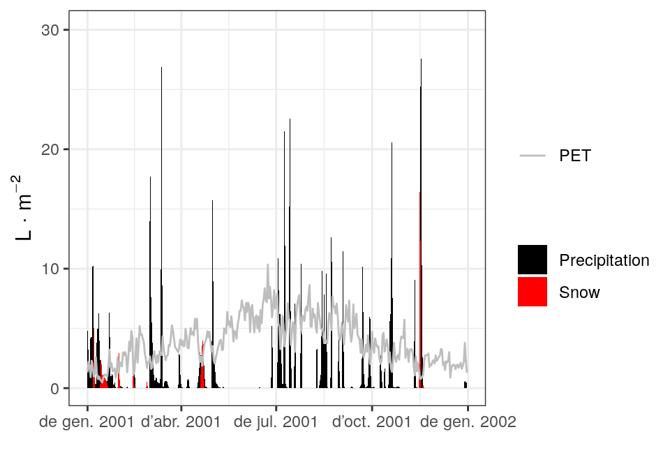
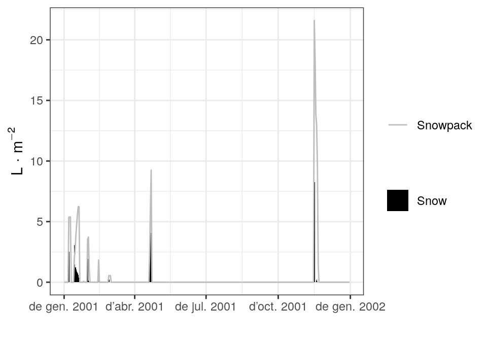
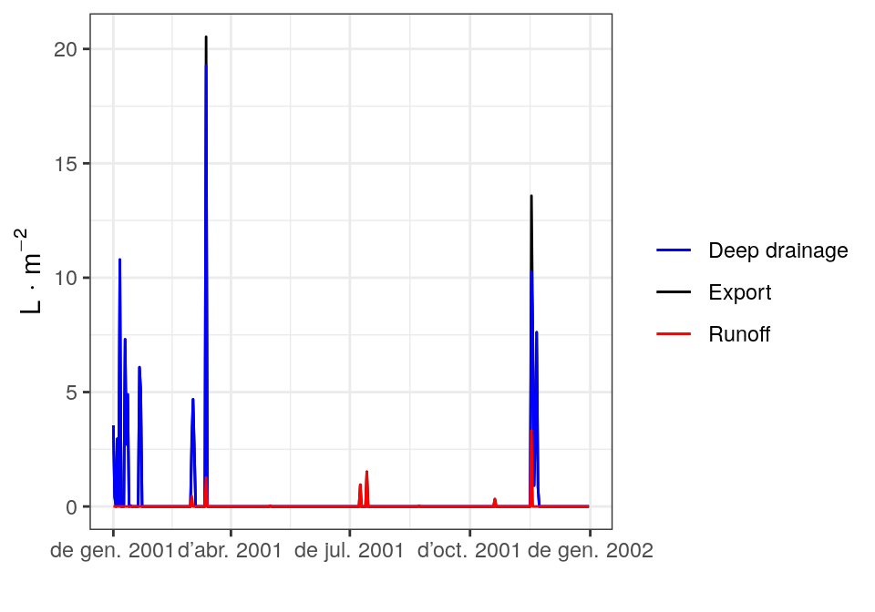
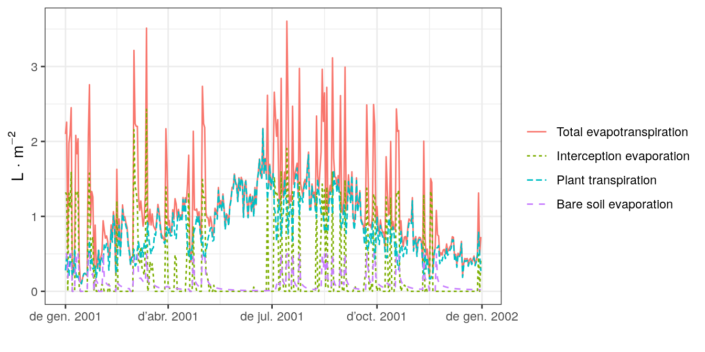
Function plot is also allows displaying soil moisture dynamics by layer, which can be done in four different ways (the first two only imply a change in axis units):
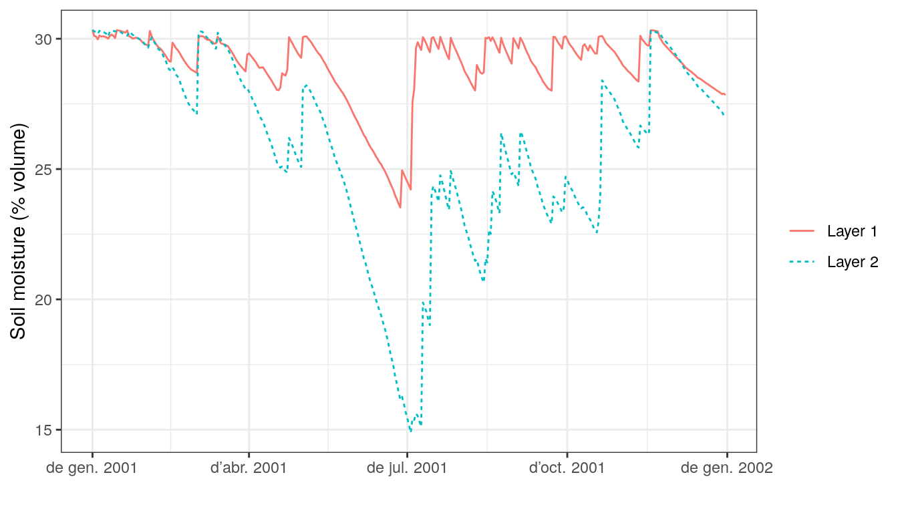
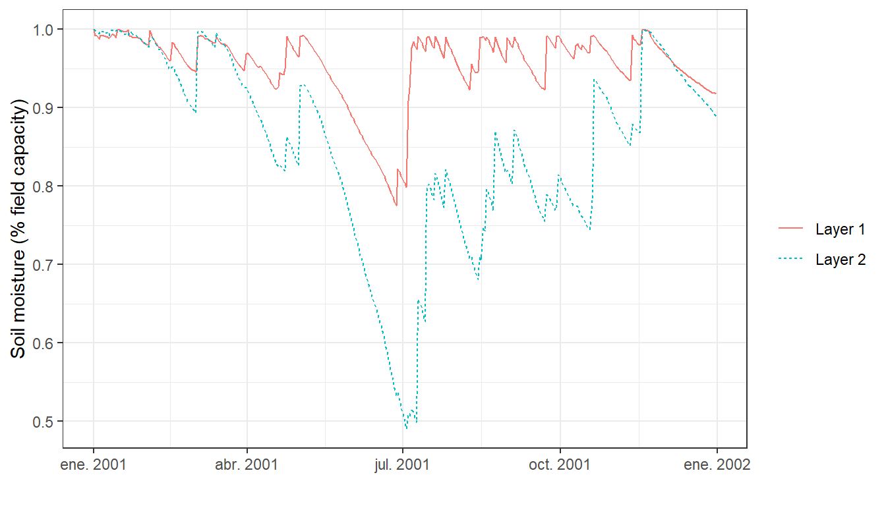
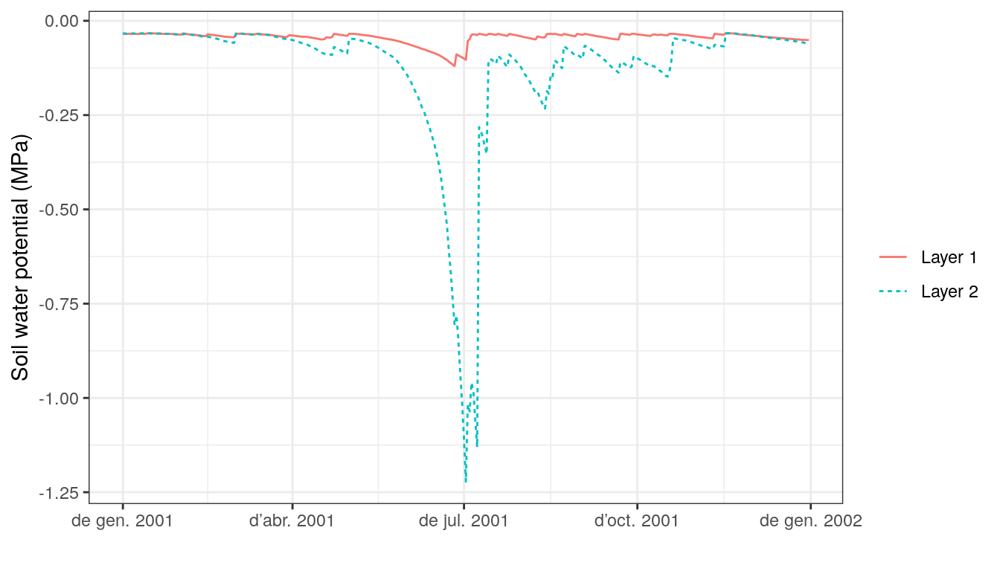
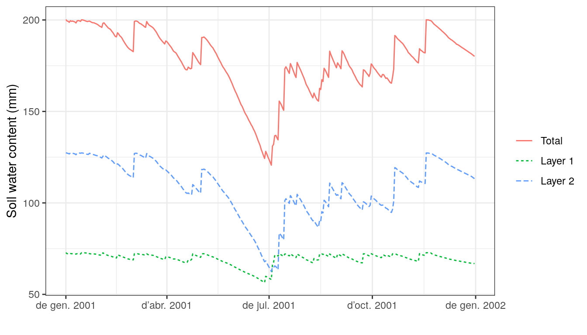
Finally, the same function can also be used to draw the dynamics of plant variables by cohorts, such as transpiration, photosynthesis, water potential or drought stress:
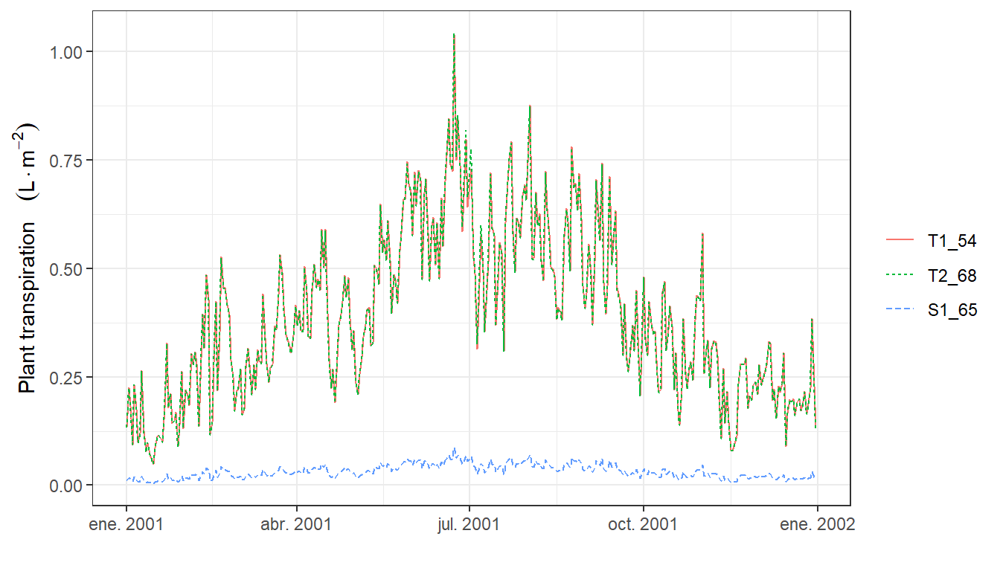
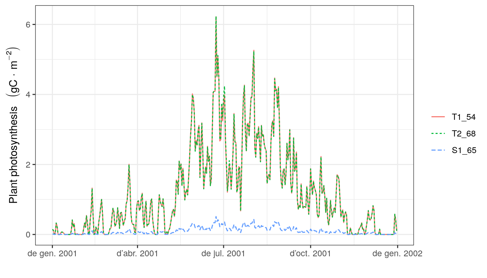
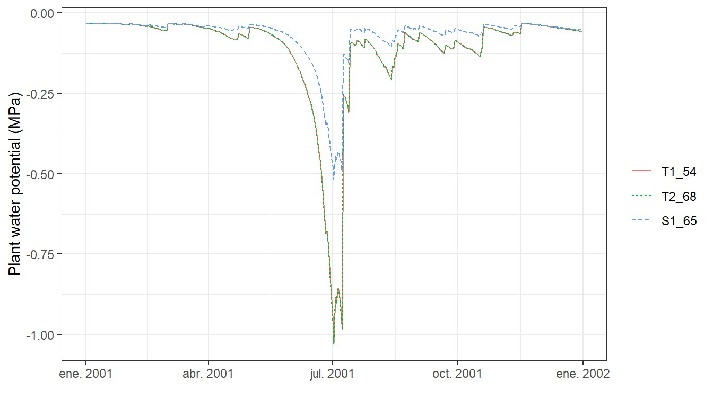
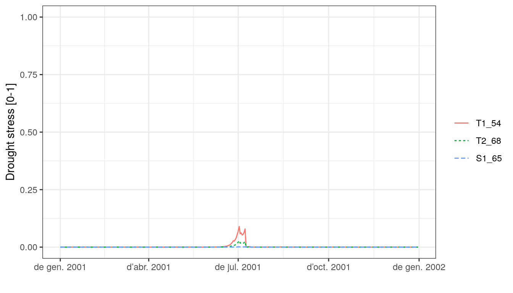
General summaries
While the simulation model uses daily steps, users will normally be interested in outputs at larger time scales. The package provides a summary for objects of class spwb. This function can be used to summarize the model’s output at different temporal steps (i.e. weekly, annual, …). For example, to obtain the average soil moisture and water potentials by months one can use:
## W.1 W.2 ML.1 ML.2 MLTot WTD SWE
## 2001-01-01 0.9922356 0.9947366 72.24882 126.75412 199.0029 1000 1.65056874
## 2001-02-01 0.9711613 0.9500296 70.71431 121.05734 191.7716 1000 0.27480347
## 2001-03-01 0.9747463 0.9661769 70.97535 123.11491 194.0903 1000 0.01762496
## 2001-04-01 0.9538158 0.8615827 69.45131 109.78701 179.2383 1000 0.57895858
## 2001-05-01 0.9493763 0.8599847 69.12805 109.58338 178.7114 1000 0.00000000
## 2001-06-01 0.8333673 0.6366546 60.68096 81.12560 141.8066 1000 0.00000000
## 2001-07-01 0.9583558 0.6870262 69.78189 87.54418 157.3261 1000 0.00000000
## 2001-08-01 0.9633368 0.7631771 70.14458 97.24769 167.3923 1000 0.00000000
## 2001-09-01 0.9643429 0.8029288 70.21783 102.31305 172.5309 1000 0.00000000
## 2001-10-01 0.9768679 0.8261857 71.12983 105.27656 176.4064 1000 0.00000000
## 2001-11-01 0.9717403 0.9225943 70.75647 117.56141 188.3179 1000 2.59388333
## 2001-12-01 0.9402455 0.9292045 68.46320 118.40370 186.8669 1000 0.00000000
## PlantExt.1 PlantExt.2 psi.1 psi.2
## 2001-01-01 0.06686311 0.2356511 -0.03444909 -0.03401859
## 2001-02-01 0.13947418 0.4915593 -0.03863988 -0.04416217
## 2001-03-01 0.14492370 0.5107660 -0.03755349 -0.03965679
## 2001-04-01 0.18493869 0.6517837 -0.04222177 -0.07286244
## 2001-05-01 0.21828994 0.7693124 -0.04427942 -0.07676995
## 2001-06-01 0.31120215 1.0879804 -0.08631691 -0.42670990
## 2001-07-01 0.26268290 0.9124204 -0.04198163 -0.38689128
## 2001-08-01 0.26538933 0.9351735 -0.04001082 -0.13920740
## 2001-09-01 0.20828518 0.7340370 -0.04002550 -0.10297327
## 2001-10-01 0.14940358 0.5265229 -0.03738415 -0.09492900
## 2001-11-01 0.10791619 0.3803352 -0.03838629 -0.05214590
## 2001-12-01 0.10093362 0.3557280 -0.04567248 -0.04910614Parameter output is used to indicate the element of the spwb object for which we desire summaries. Similarly, it is possible to calculate the average stress of plant cohorts by months:
## T1_54 T2_68 S1_65
## 2001-01-01 3.356032e-06 9.943811e-07 4.350108e-07
## 2001-02-01 7.053718e-06 2.089997e-06 6.487619e-07
## 2001-03-01 5.281577e-06 1.564915e-06 5.776908e-07
## 2001-04-01 2.803584e-05 8.307030e-06 1.145205e-06
## 2001-05-01 3.945450e-05 1.169060e-05 1.471554e-06
## 2001-06-01 9.220889e-03 2.768820e-03 1.542112e-04
## 2001-07-01 1.746479e-02 5.334372e-03 2.874571e-04
## 2001-08-01 2.233255e-04 6.618215e-05 4.121051e-06
## 2001-09-01 7.733500e-05 2.291503e-05 1.829009e-06
## 2001-10-01 7.937053e-05 2.351853e-05 1.734765e-06
## 2001-11-01 1.310326e-05 3.882479e-06 7.496748e-07
## 2001-12-01 9.898218e-06 2.932817e-06 1.054607e-06The summary function can be also used to aggregate the output by species. In this case, the values of plant cohorts belonging to the same species will be averaged using LAI values as weights. For example, we may average the daily drought stress across cohorts of the same species (here there is only one cohort by species, so this does not modify the output):
## Pinus halepensis Quercus coccifera Quercus ilex
## 2001-01-01 3.180250e-06 4.278514e-07 9.422974e-07
## 2001-01-02 3.180250e-06 4.278514e-07 9.422974e-07
## 2001-01-03 3.333327e-06 4.535394e-07 9.876536e-07
## 2001-01-04 3.176564e-06 4.257112e-07 9.412052e-07
## 2001-01-05 3.180250e-06 4.278514e-07 9.422974e-07
## 2001-01-06 3.180250e-06 4.278514e-07 9.422974e-07Or we can combine the aggregation by species with a temporal aggregation (here monthly averages):
## Pinus halepensis Quercus coccifera Quercus ilex
## 2001-01-01 3.356032e-06 4.350108e-07 9.943811e-07
## 2001-02-01 7.053718e-06 6.487619e-07 2.089997e-06
## 2001-03-01 5.281577e-06 5.776908e-07 1.564915e-06
## 2001-04-01 2.803584e-05 1.145205e-06 8.307030e-06
## 2001-05-01 3.945450e-05 1.471554e-06 1.169060e-05
## 2001-06-01 9.220889e-03 1.542112e-04 2.768820e-03
## 2001-07-01 1.746479e-02 2.874571e-04 5.334372e-03
## 2001-08-01 2.233255e-04 4.121051e-06 6.618215e-05
## 2001-09-01 7.733500e-05 1.829009e-06 2.291503e-05
## 2001-10-01 7.937053e-05 1.734765e-06 2.351853e-05
## 2001-11-01 1.310326e-05 7.496748e-07 3.882479e-06
## 2001-12-01 9.898218e-06 1.054607e-06 2.932817e-06Specific output functions
The package provides some functions to extract or transform specific outputs from soil plant water balance simulations. In particular, function spwb_stress() allows calculating several plant stress indices, such as the number of days with drought stress > 0.5 or the maximum drought stress:
## T1_54 T2_68 S1_65
## 2001-01-01 0 0 0## T1_54 T2_68 S1_65
## 2001-01-01 0.09000509 0.02778653 0.001505316As the general summary function, spwb_stress() allows calculating stress indices at several temporal scales. For example the water stress index (integral of water potential values) can be calculated and drawn for every month:
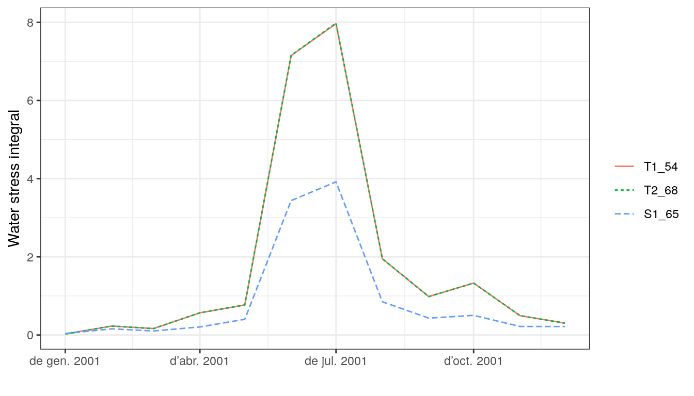
Another specific summary function is spwb_waterUseEfficiency(). This is most useful with advanced water and energy balance modeling, but for simple water balance it calculates the ratio between photosynthesis and transpiration at the desired scale:
## 2001-01-01 2001-02-01 2001-03-01 2001-04-01 2001-05-01 2001-06-01
## 0.4831519 0.9739391 1.6897986 1.4888223 3.0347242 4.3459385
## 2001-07-01 2001-08-01 2001-09-01 2001-10-01 2001-11-01 2001-12-01
## 4.5353706 5.0114051 3.2328872 3.2968814 1.0235080 0.8007527